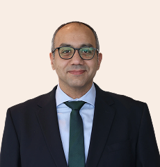
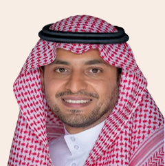
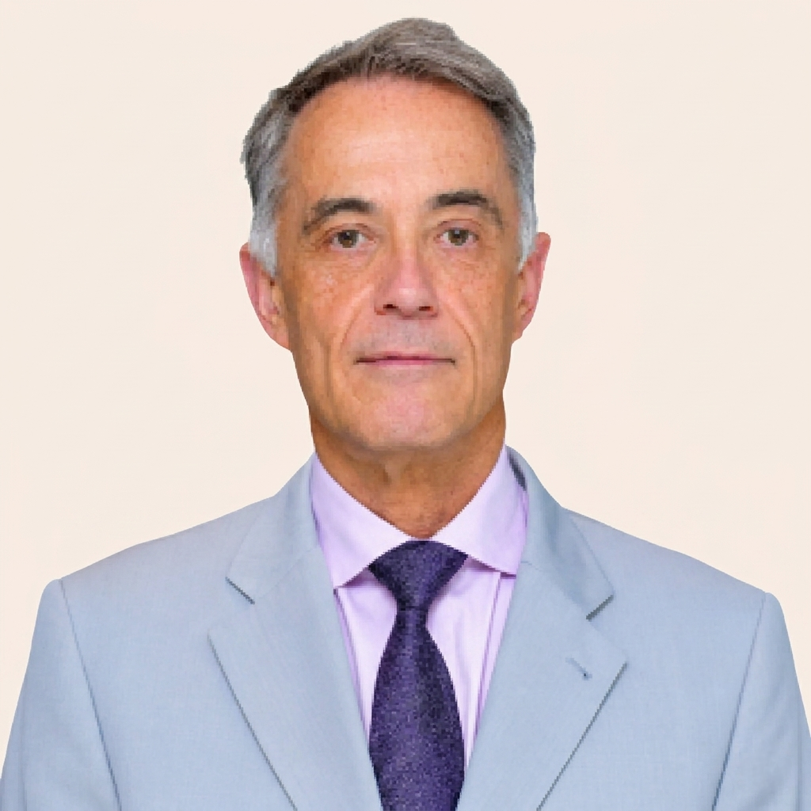
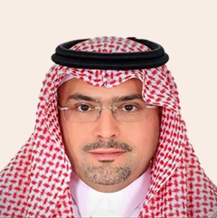
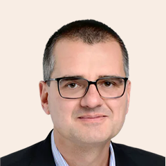
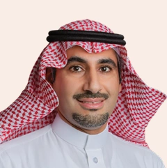
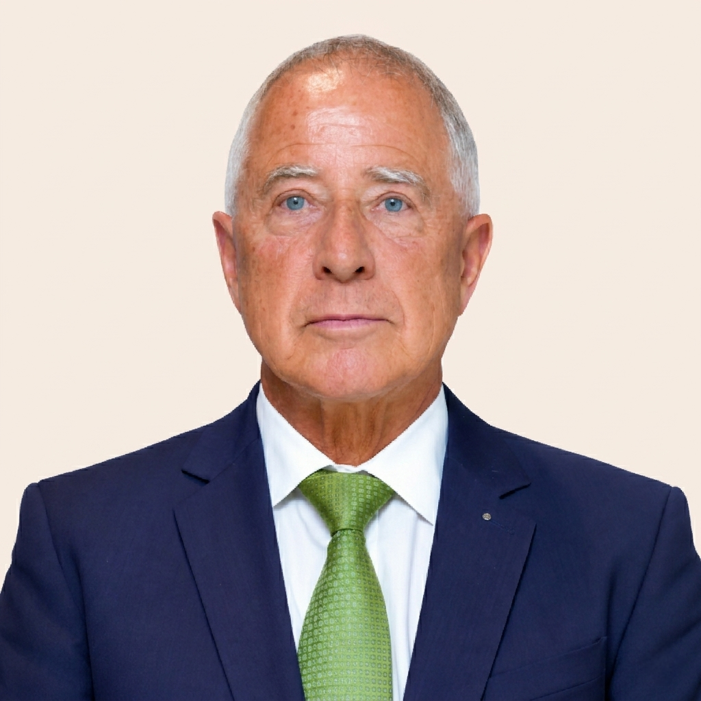

Leading with conviction
Executive leadership.
Expertise across underwriting, finance,
actuarial science and risk.

Nilmin Pieries

Belhassen Tonat

Mohamed Afify
Guiding our direction
Board of directors.
Strong governance.
A long-term view.

H.H. Prince Sultan bin Khalid bin Faisal Al Saud

Jean-Luc Gourgeon

Waleed AlHumaid

Dr. Kai-Uwe Schanz

Abdulatif Ali Alseif

Dr. Peter Franz Hugger
Your next chapterBrilliance begins
Brilliance begins
with a partnership.
Let’s begin a conversation about your risk management needs.
Partner with us